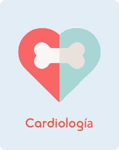
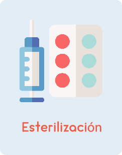
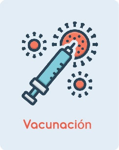

¡La primera consulta es clave para la salud
de tu mascota!. En nuestra revisión detallada,
consideramos su historial médico, especie,
raza, edad y estilo de vida. La consulta
dura aproximadamente 40 minutos e
incluye recomendaciones personalizadas.
Cada mascota es única, por lo que su
dieta debe adaptarse a su edad, raza
y peso. Una dieta personalizada en
cada etapa de su vida es clave para
su salud a largo plazo. Evita problemas
futuros con una alimentación adecuada.
La salud cardíaca de tu mascota es crucial. En
nuestra sección de cardiología, nos enfocamos
en brindar un cuidado especializado para
detectar y tratar cualquier afección del corazón.
Contamos con un equipo experto que se
encargará de la salud cardíaca de tu peludo.

En Pet Care, transformamos el baño en una
experiencia increíble para tu mascota.
Nuestro equipo veterinario ofrece un
tratamiento completo con productos de
alta calidad para que tu peludo se
sienta cómodo y relajado.
Realizamos esterilización y castración para perros
y gatos, con un servicio completo desde la
recepción hasta la entrega. Este procedimiento
ayuda a reducir comportamientos no deseados
y disminuye el riesgo de problemas de salud.

¡Protege a tu mascota con nuestras vacunas!
Cachorros: la vacunación inicial genera los
anticuerpos necesarios para enfermedades
tempranas.
Mascotas mayores de 7 años: los refuerzos
anuales mantienen altos los anticuerpos de
las principales enfermedades virales.



Copyright © 2024 Petcare.co Todos los derechos reservados.